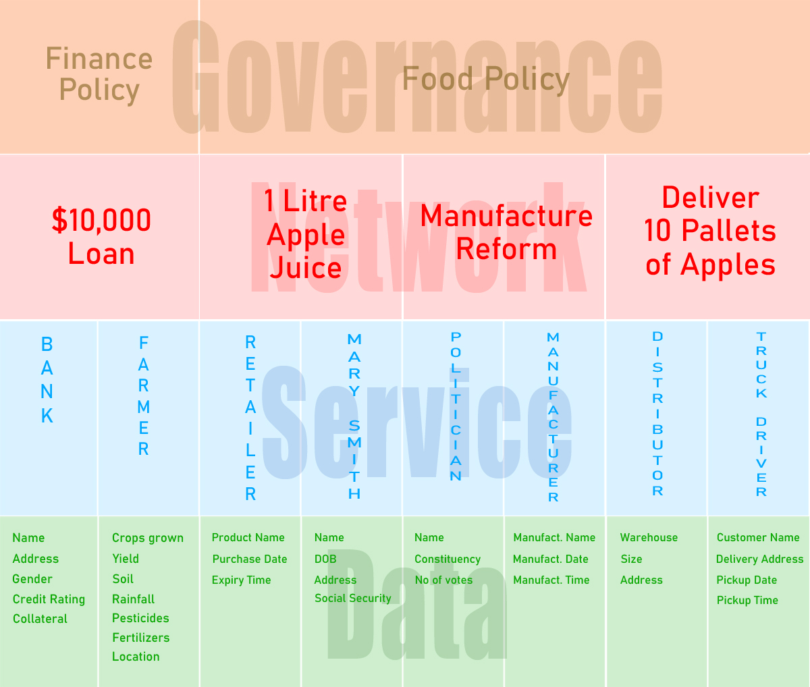

Eleutherios is a global cooperative forum or digital sociopolitical or economic system, that enables humankind to self-organize with one another at scale through the internet.
It does this by scaling the request layer (customer) horizontally over the service layer (business) to enable, more than one service provider to be able to participate in the same forum or request (B2B).
In the old school analogue sociopolitical or economic system it's the opposite. Only one service provider can participate in the forum or request (B2C).
There are many problems that can occur from this type of behavior. Such as competition among service providers; an inherent cost to acquire customers; and the inability for service providers to able to share data or policies with one another.

Eleutherios changes this behavior by making the forum or request scalable. In this example Hire My Farmer wants to use the Barley yield data, that they're getting from GYGA to share with another service provider.
They can click on the plus button to create a sub-forum in the Barley yield data forum and include the service provider they want to share the data with.

The main advantage to doing this is that it separates the concerns of each service provider. Service providers are able to take the responsibility for managing their request or concerns of their customers.
In the above example, the Barley yield farming forum is a child of the Barley yield data forum. Service providers can navigate their way through the conversation using a virtual breadcrumb.

The current version of Eleutherios provides basic tooling such as creating a forum, creating a sub-forum, creating a service, searching for forums or services, and purchasing services.
Over-time Eleutherios will evolve into a PAAS (Platform-as-a-service) or cloud architecture, enabling service providers to operate their business at scale.
Current features:
- Tags for filtering forums or services
- Forum in forum
- Blocking to prevent unwanted services or users from serving in forums, they have been asked not to serve in or for requesting services, they have been asked not to request
- Service ratings/reviews
- B2B Payments
Contribute
Help fix bugs or resolve issues.
https://github.com/aletheon/eleutherios-website/issues
Make a donation to the Eleutherios open source project.